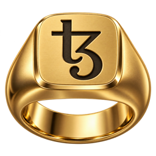

Signet is a multi-featured wallet for the Tezos blockchain. You can manage your keys, use a Ledger and do blockchain transactions. Additionally, you can view your assets and NFTs. It has some basic functionality on Etherlink. You can make and use multisig wallets. It works on Mainnet and the test networks, including Quantumnet, the post-quantum Tezos test network. You can manage your baking key with it and vote in the on-chain governance.
Signet is written in Swift for Mac and GTK platforms such as Linux and FreeBSD. The Windows port is written in C#. Signet uses the Octez.js library for blockchain functions. Signet also uses Octez Connect to interact with decentralised apps such as Objkt and Teia.
Disclaimer: Use this software at your own risk. It comes with absolutely no warranty.
All versions have been vibe-coded with Claude Code. Version 0.9.14 has been checked with ChatGPT/Codex,
but no formal security audit has been done. Latest AI audit report.
 Mac |
 Windows |
Linux |
FreeBSD |
| Source | Source | Source | Source |
| Download for Apple Silicon | Downloads for x64 / arm64 | Downloads / APT | - |
Platform icons by Font Awesome, licensed under CC BY 4.0.